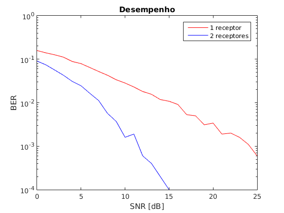
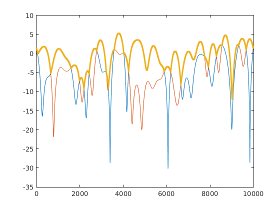

DIVERSIDADE - Comparação entre o recebimento em uma antena e em duas
Engenharia de Telecomunicações - IFSC/SJ
Comunicação sem Fio - 2019/2
Allex Magno Andrade
Contents
clear all
close all
clc
Rs = 10e3;
num_sym = 1e4;
fd = 10;
t = 0:1/Rs:num_sym/Rs-(1/Rs);
M = 2;
info = randint(num_sym,1,M);
info_mod = pskmod(info, M);
canal_ray1 = rayleighchan(1/Rs, fd);
canal_ray2 = rayleighchan(1/Rs, fd);
canal_ray1.StoreHistory = 1;
canal_ray2.StoreHistory = 1;
sinal_rec_ray1 = filter(canal_ray1, info_mod);
sinal_rec_ray2 = filter(canal_ray2, info_mod);
sinal_rec2 = sinal_rec_ray1 + sinal_rec_ray2;
ganho_ray1 = canal_ray1.PathGains;
ganho_ray2 = canal_ray2.PathGains;
for SNR = 0:25
sinalRxRay1Awgn = awgn(sinal_rec_ray1, SNR);
sinalRxRay2Awgn = awgn(sinal_rec_ray2, SNR);
sinalEqRay1 = sinalRxRay1Awgn./ganho_ray1;
sinalEqRay2 = sinalRxRay2Awgn./ganho_ray2;
for t = 1:length(info_mod)
if abs(ganho_ray1(t)) > abs(ganho_ray2(t))
sinalDemRay(t) = pskdemod(sinalEqRay1(t), M);
else
sinalDemRay(t) = pskdemod(sinalEqRay2(t), M);
end
end
sinalDemRay1 = pskdemod(sinalEqRay1, M);
[num(SNR+1), taxa(SNR+1)] = biterr(info, sinalDemRay1);
[num2(SNR+1), taxa2(SNR+1)] = biterr(info, transpose(sinalDemRay));
end
Warning: This is an obsolete function and may be removed in the future. Please
use RANDI instead.
Plots
figure(1)
semilogy(0:25,taxa, 'r', 0:25, taxa2, 'b');xlabel('SNR [dB]')
ylabel('BER')
legend('1 receptor', '2 receptores')
title('Desempenho')
figure(2)
plot(20*log10(abs(ganho_ray1)));
hold on
plot(20*log10(abs(ganho_ray2)));
ganho_eq = max(ganho_ray1, ganho_ray2);
plot(20*log10(abs(ganho_eq)), '.');
hold off
 